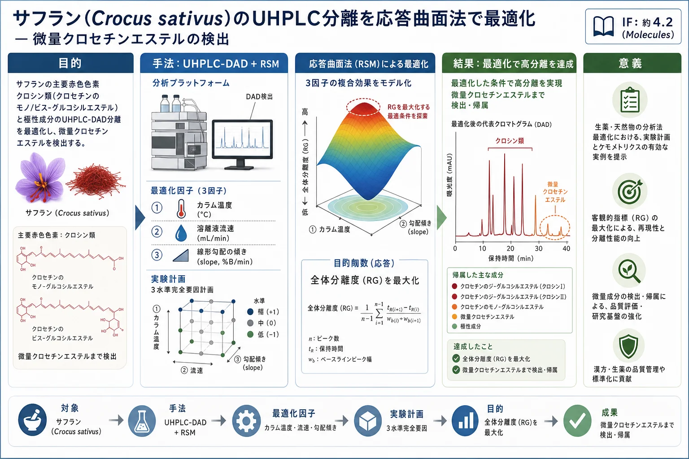
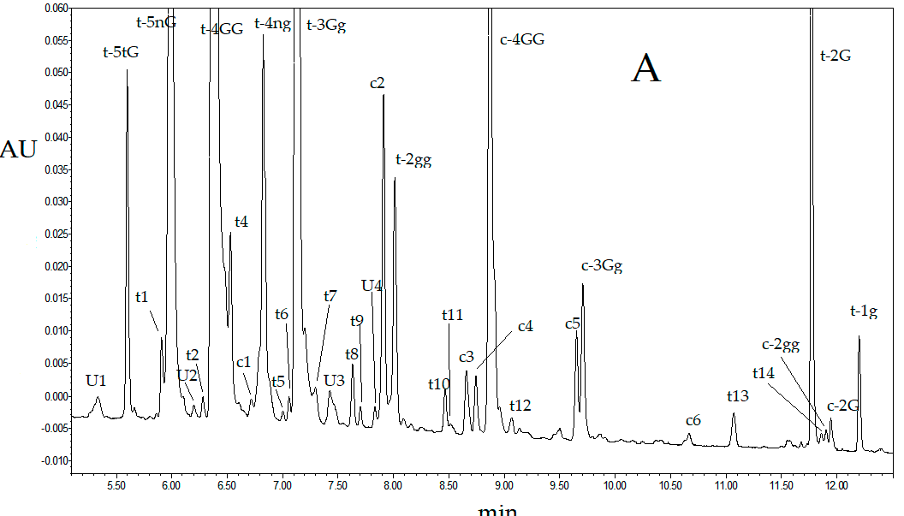
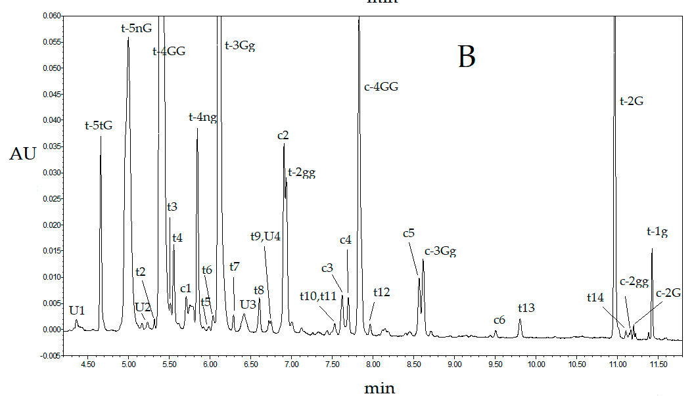
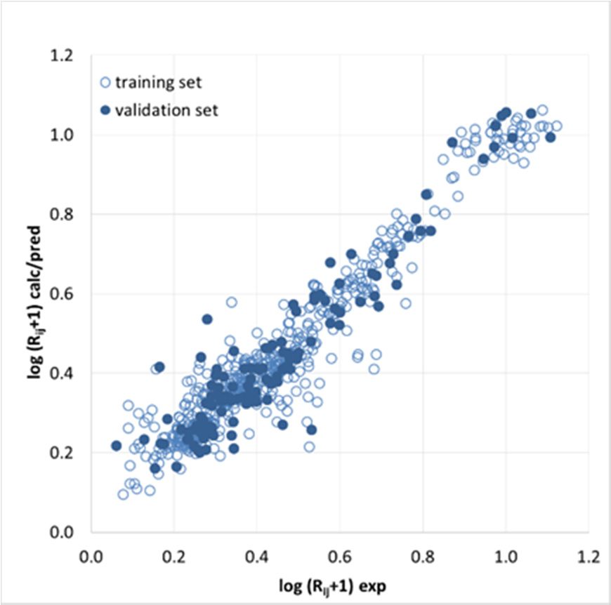
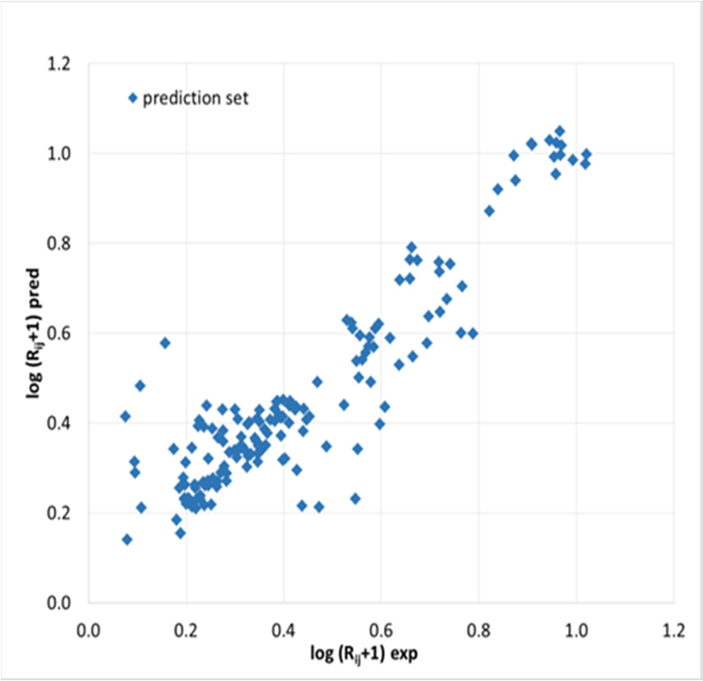
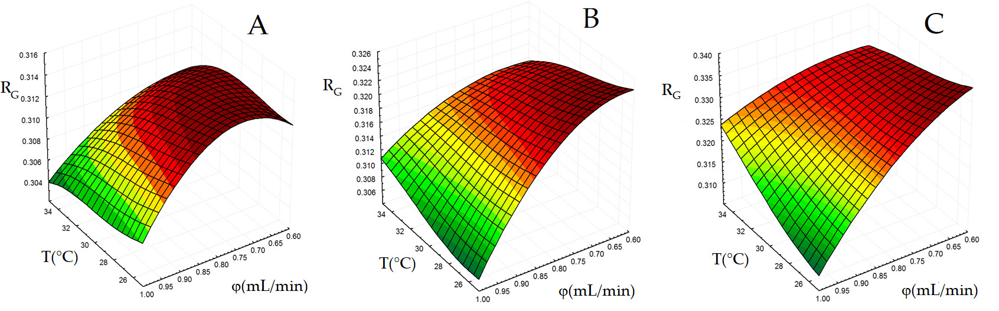
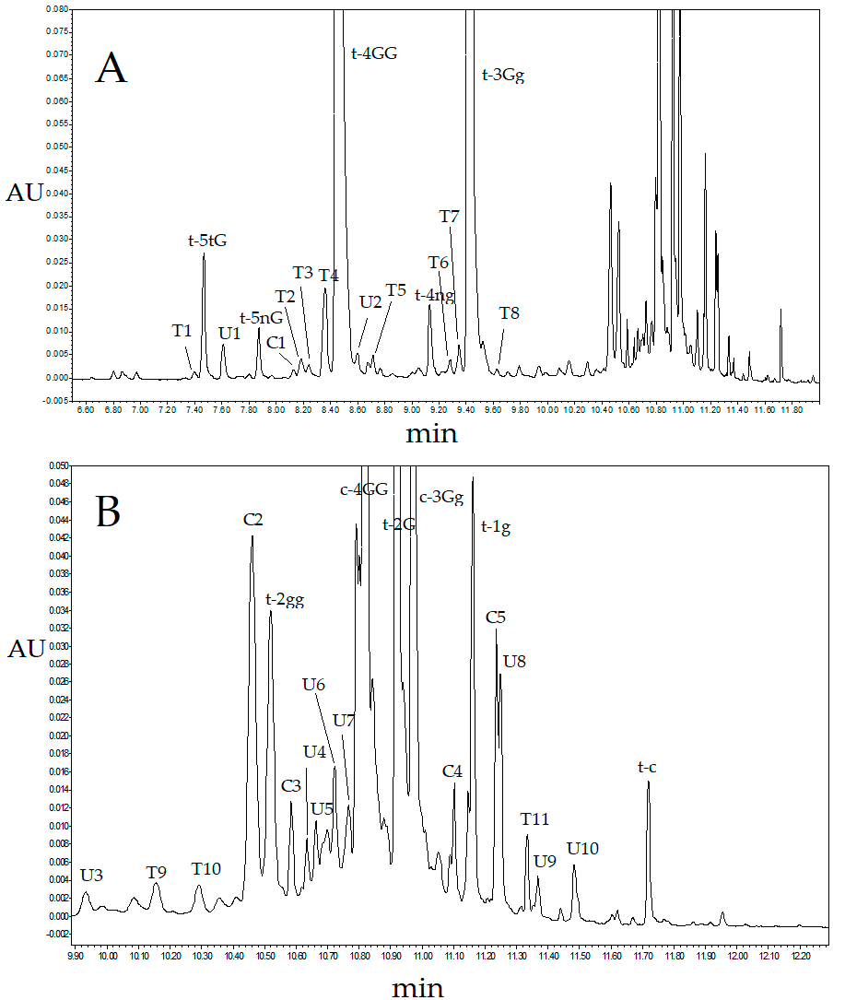
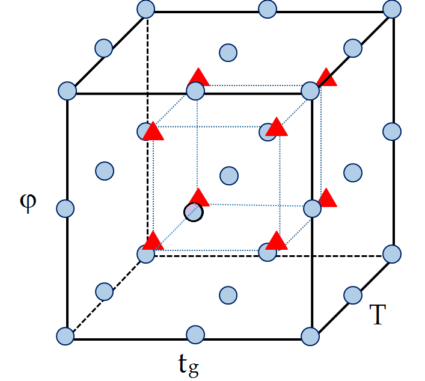
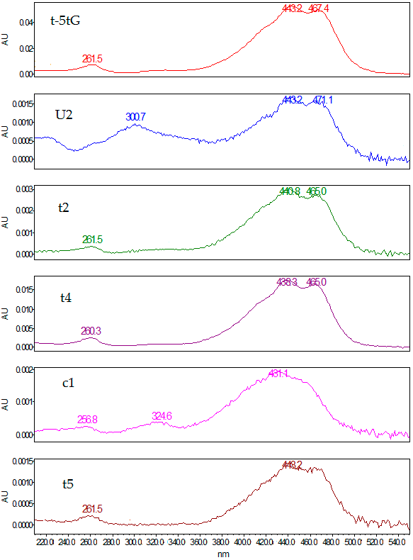

サフラン(Crocus sativus)のUHPLC分離を応答曲面法で最適化 — 微量クロセチンエステルの検出

<!-- 方針: ほぼ全訳＋必要に応じた補足。原文構成に沿って訳出。「> 補足:」は訳者注。数式はKaTeXで表示。 -->
書誌情報
- 原題: UHPLC Analysis of Saffron (Crocus sativus L.): Optimization of Separation Using Chemometrics and Detection of Minor Crocetin Esters
- 著者: Angelo Antonio D'Archivio（責任著者）, Francesca Di Donato, Martina Foschi, Maria Anna Maggi, Fabrizio Ruggieri（ラクイラ大学ほか, イタリア）
- 掲載: Molecules 2018, 23, 1851. https://doi.org/10.3390/molecules23081851（オープンアクセス）
- インパクトファクター: 約4.2（Molecules, MDPI・JCR近年）
補足: サフランは生薬・香辛料で、赤色色素クロシン類が品質指標。本稿は指紋やQ-markerでなく、実験計画(DoE)/応答曲面法(RSM)で分析法(分離)を最適化する方法論の実例で、当サイトのAQbD論文(芫花・薬用植物AQbD)と同じ「分析法の作り込み」系。
要旨 (Abstract)
ダイオードアレイ検出（DAD）を結合した超高速液体クロマトグラフィー（UHPLC）を適用し、サフラン（Crocus sativus L.）の主な赤色成分であるクロセチンのモノおよびビス-グルコシルエステル（クロシン類、crocins）や、その他の極性成分の分離と検出を改善した。応答曲面法（RSM）を使用し、カラム温度、溶離液流速、および線形溶離液濃度勾配の傾き（slope）の複合的な影響を考慮して、Kinetex C18（Phenomenex）カラム上でのクロマトグラフィー分離度（resolution）を最適化した。上記因子の適切な組み合わせを特定するために、3水準完全要因計画（three-level full-factorial design of experiments）を採用した。22の隣接するピークの分離度に対する分離条件の影響を、標的分析物を識別するためにビット文字列表現を用いた多層人工ニューラルネットワーク（ANN）によって同時にモデル化した。最適な分離条件下で収集されたクロマトグラムは、質量分析（MS）データによってすでに特徴付けられており、通常HPLCで検出されるものよりも多くのクロセチンエステルを明らかにした。新規のLuna Omega Polar C18（Phenomenex）カラムで実施された超高速液体クロマトグラフィー分析により、多数のクロセチン誘導体の存在が確認された。新たに発見されたサフラン成分の質量分析データを取得し、化学構造を明らかにするためのさらなる研究が進行中である。
キーワード： サフラン、クロシン類、UHPLC分析、分離最適化、人工ニューラルネットワーク、応答曲面法
1. 導入 (Introduction)
サフラン（Crocus sativus L.の乾燥柱頭）は、その着色特性や風味特性から、世界中で食品添加物として使用されている貴重な香辛料である。料理への用途に加えて、サフランは古くから伝統医学における自然療法薬とみなされており、現在ではその成分の生物活性を調査することを目的とした生物医学研究の対象として成長している [1,2]。クロセチン（ポリエンジカルボン酸）の水溶性モノおよびジグリコシルエステルの一群であるクロシン類（crocins）は、高く評価されているサフランの色をもたらす主な成分である [3,4]。サフラナール（モノテルペンアルデヒド）とピクロクロシン（サフラナールの配糖体）は、他の2つの主要なサフラン成分であり、それぞれ主に香りと苦味に寄与している。ダイオードアレイ（DAD）または質量分析（MS）検出を伴う高速液体クロマトグラフィー（HPLC）は、品質管理と地理的トレーサビリティの両方の目的で、水溶性サフラン成分を同定および定量するために広く適用されてきた [3–10]。ピクロクロシンやフラボノイド（特にケンフェロール誘導体）に構造的に関連する化合物も、水性または含水アルコール抽出物のHPLC分析によって決定することができる [4,9–12]。
現在までに、16種類のクロシン類の化学構造がMSデータによって同定されている [4–6]。これらは、糖部位（グルコシド(g)、ジェンチオビオシド(G)、ネアポリタノシド(n)またはトリグルコシド(t)）や、クロセチンの cis および all-trans 異性体フォームにおいて異なる。しかし、サフランのHPLC特性評価において容易に検出できるのは、比較的強いクロマトグラフィーピークを与える主要なクロシン類（6〜10化合物）のみである [3,5,7–10]。特に、全クロシンの95%以上を占める trans-crocetin bis(β-D-gentiobiosyl) ester、trans-crocetin (β-D-gentiobiosyl)(β-D-glucosyl) ester、および cis-crocetin (β-D-gentiobiosyl)(β-D-glucosyl) esterと、他のいくつかのクロセチン誘導体が、観察されるクロマトグラムを支配している。質量分析検出は、サフラン成分に関する構造情報を収集するために不可欠であるものの、同様の分離条件下でDADによって明らかにされるものと比較して、追加のクロシン類を際立たせることはできない [4–7]。
最近、イタリア産およびイラン産サフランのHPLC-DAD分析において20種類以上のクロシン類が同定されており [13,14]、新たに見出されたいくつかの微量クロセチン誘導体はサフランの原産地決定のための強力なマーカーとなった。しかし、HPLCクロマトグラムのケモメトリクス処理に基づく地理的識別 [13]は、サフラン組成に関する情報が部分的に失われるため、分離が不十分な条件下では効率が低下する可能性がある。
超高速液体クロマトグラフィー（UHPLC）は、従来のHPLCよりも分析が迅速で分離効率が高いにもかかわらず、これまでサフランの特性評価に適用されることはめったになかった [15–17]。本研究の主な目的は、水性抽出物の定性的化学組成に関する情報を改善するために、グラジエント溶出下のUHPLC-DADによって極性サフラン成分（特にクロシン類）の分離を強化することである。移動相流速、線形溶離液グラジエントの傾き、およびカラム温度がクロマトグラムの分離度に及ぼす同時かつ相互作用的な影響を、応答曲面法（RSM）によって調査した。上記因子の適切な組み合わせを特定するために、完全要因実験計画法（DOE）を使用した。UHPLCの分離度を記述する応答曲面は、クロマトグラム中の隣接するピーク対の分離度をモデル化するために訓練された人工ニューラルネットワーク（ANN）の出力を組み合わせることによって作成された。最適化された分離条件下でKinetex C18（Phenomenex, Torrance, CA, USA）カラムを用いて行われたUHPLC-DAD分析により、新しいクロセチン誘導体の同定が可能となった。予想外に多数のクロシン類が存在することは、極性修飾表面を有する新しい固定相が充填されたLuna Omega Polar C18（Phenomenex）カラムを用いて行われたUHPLC分析によって確認された。予備的な質量スペクトルデータは、新たに見出されたサフラン成分がクロセチンエステルファミリーに属するという帰属を支持しており、それらの化学構造を明らかにするためのさらなる研究が進行中である。
2. 結果と考察 (Results and Discussion)
2.1. 人工ニューラルネットワークに基づくクロマトグラム分離度のモデル化 (Artificial Neural Network-Based Modeling of Chromatogram Resolution)
2.1.1. ピーク対の分離度の人工ニューラルネットワークモデル化 (Artificial Neural Network Modeling of Peak Peak Resolution)
人工ニューラルネットワークは、これまでクロマトグラフィーにおいて、RSM最適化 [18–20]や保持挙動予測 [21–25]を含む複雑な回帰問題を処理するために使用されてきた。本研究では、サフラン抽出物のクロマトグラム分離度に対する移動相流速（$\phi$）、線形溶離液グラジエント時間（$t_g$）、およびカラム温度（$T$）の影響を調査するために、ANN多変量モデル化を適用した。完全要因DOEに従って定義された上記因子の組み合わせに対して観察されたクロマトグラムを、ANNベースのモデルを構築するために考慮し、検証のために追加の8つのクロマトグラムを取得した（セクション3.6.1）。図1は、クロシン類の吸収極大である440 nmで検出されたいくつかの代表的なUHPLCクロマトグラムを示している。観察されたピークのほとんどは、スペクトルの特徴（セクション3.5）に従って、trans-またはcis-クロシン類（表1）に確実に帰属させることができる。
我々は、各分析物対を表すためにビット文字列を使用し、クロマトグラムで観察された隣接するピークの分離度に関するすべてのデータを同時に処理できる単一のANNモデルを生成した。同様の戦略は、これまでに有機塩素系汚染物質のガスクロマトグラフィー分離を最適化するため [20]、あるいは多重線形グラジエント溶出条件下での生理活性溶質のHPLC保持時間を予測するため [26]に採用されている。流速（$\phi$）、グラジエント時間（$t_g$）、温度（$T$）に関連する3つのニューロンに加えて、保持時間順に並べられた、関心のあるクロマトグラフィーピーク（表1に示す）に対応する22のニューロンをANN入力層に含めた。特定のペアの分離度 $R_{ij}$ を対応するサフラン代謝物のペア $i, j$ にリンクするために、これらの入力は、$i$ 番目と $j$ 番目を除いてすべて0に設定され、$i$ 番目と $j$ 番目は1に設定された。したがって、ネットワークは25個の入力変数を処理するように求められ、そのうちの3個は分離システムを記述し、残りの22個は分析物ペアに関連付けられていた。
図1. Kinetex C18カラムを用いて得られたサフラン抽出物の440 nmで検出された超高速液体クロマトグラフィー-ダイオードアレイ（UHPLC-DAD）クロマトグラム。(A) $t_g = 10 \text{ min}$, $T = 25\ ^\circ\text{C}$, $\phi = 0.60 \text{ mL/min}$、(B) $t_g = 10 \text{ min}$, $T = 25\ ^\circ\text{C}$, $\phi = 1.00 \text{ mL/min}$。ピーク帰属は表1に報告されている。
表1. Kinetex C18カラムを用いて収集された、440 nmで検出されたUHPLC-DADクロマトグラムで見出されたサフラン代謝物のリスト：最適分離条件の適用下で観察された保持時間（RT）、帰属された構造または化学クラス、吸収スペクトルの絶対および相対極大。
| RT (min) | 化合物／化学クラス | 略称 $^a$ | $\lambda_{\max}$ (nm) |
|---|---|---|---|
| 5.34 | 未知 (unknown) | U1 | 230, 423 |
| 5.59 | trans-crocetin (tri-β-D-glucosyl)(β-D-gentiobiosyl) ester | t-5tG $^b$ | 262, 443, 466 |
| 5.91 | trans-crocin | t1 $^b$ | 262, 441, 465 |
| 5.99 | trans-crocetin (β-D-neapolitanosyl)(β-D-gentiobiosyl) ester | t-5nG $^b$ | 241, 418, 440 |
| 6.20 | 未知 (unknown) | U2 | 301, 443, 471 |
| 6.28 | trans-crocin | t2 | 262, 442, 466 |
| 6.37 | trans-crocetin bis(β-D-gentiobiosyl) ester | t-4GG $^b$ | 262, 441, 465 |
| 6.53 | trans-crocin | t3 $^b$ | 259, 438, 465 |
| 6.60 | trans-crocin | t4 $^b$ | 260, 440, 465 |
| 6.72 | cis-crocin | c1 $^b$ | 256, 325, 431, 440 sh |
| 6.83 | trans-crocetin (β-D-neapolitanosyl)(β-D-glucosyl) ester | t-4ng $^b$ | 261, 441, 464 |
| 7.00 | trans-crocin | t5 | 261, 438, 464 |
| 7.05 | trans-crocin | t6 | 260, 441, 463 |
| 7.13 | trans-crocetin (β-D-gentiobiosyl)(β-D-glucosyl) ester | t-3Gg $^b$ | 262, 441, 465 |
| 7.30 | trans-crocin | t7 $^b$ | 260, 440, 463 |
| 7.43 | 未知 (unknown) | U3 $^b$ | 317, 426, 444 sh |
| 7.63 | trans-crocin | t8 $^b$ | 260, 441, 466 |
| 7.70 | trans-crocin | t9 $^b$ | 253, 440, 463 |
| 7.83 | 未知 (unknown) | U4 $^b$ | 243, 308, 413, 438 sh |
| 7.91 | cis-crocin | c2 $^b$ | 263, 329, 440, 465 |
| 8.04 | trans-crocetin bis(β-D-glucosyl) ester | t-2gg $^b$ | 260, 440, 465 |
| 8.46 | trans-crocin | t10 $^b$ | 258, 435, 460 sh |
| 8.56 | trans-crocin | t11 $^b$ | 252, 432, 462 sh |
| 8.66 | cis-crocin | c3 $^b$ | 223, 265, 327, 439 |
| 8.75 | cis-crocin | c4 | 262, 329, 440, 463 |
| 8.87 | cis-crocetin bis(β-D-gentiobiosyl) ester | c-4GG $^b$ | 262, 326, 435, 458 sh |
| 9.06 | trans-crocin | t12 | 264, 442, 467 |
| 9.65 | cis-crocin | c5 $^b$ | 262, 327, 434, 457 |
| 9.70 | cis-crocetin (β-D-gentiobiosyl)(β-D-glucosyl) ester | c-3Gg $^b$ | 263, 326, 433, 460 |
| 10.66 | cis-crocin | c6 | 263, 326, 432, 456 sh |
| 11.06 | trans-crocin | t13 | 263, 443, 469 |
| 11.76 | trans-crocetin mono(β-D-gentiobiosyl) ester | t-2G | 258, 434, 459 |
| 11.85 | trans-crocin | t14 | 259, 431, 455 |
| 11.90 | cis-crocetin bis(β-D-glucosyl) ester | c-2gg | 321, 426, 451 |
| 11.94 | cis-crocetin mono(β-D-gentiobiosyl) ester | c-2G | 258, 313, 426, 450 sh |
| 12.22 | trans-crocetin mono(β-D-glucosyl) ester | t-1g | 257, 432, 458 |
$^a$ 既知のクロシン類の命名法における略称は参考文献 [4] から採用した。 $^b$ 人工ニューラルネットワーク（ANN）モデル化で考慮されたクロマトグラフィーピーク。 sh = ショルダー（shoulder）
DOEの各点について21の分離度が測定されたため、ANNキャリブレーションに $21 \times 29 = 609$ のデータサンプルが利用可能であり、外部予測には $21 \times 8 = 168$ が利用可能であった。変数のオートスケーリング後、Kennard-Stoneアルゴリズム [27] をキャリブレーションデータに適用して、ANN学習で使用するトレーニングセット（486データサンプル）を設計した。残りの123データサンプルは、ネットワークアーキテクチャ、活性化関数、および学習時間の最適な組み合わせを選択するための、ANNベースのモデル検証に使用された。
サフランの水溶性着色成分の超高速液体クロマトグラフィー分離は、選択されたDOEによって定義された様々な実験条件下、および外部検証用に設計された追加のデータ点において、2015年にラクイラ（イタリア、アブルッツォ州）で生産されたサンプルを分析することによって最適化された。UHPLC装置のオートサンプラーに保持された同一抽出物の繰り返し分析により、サフラン代謝物のピーク面積は抽出後24時間以内に著しく変化しないことが明らかになった。いずれにせよ、標的分析物の分解を避けるために、UHPLC分析は毎日新しく抽出されたサンプルに対して実施された。
検出波長440 nmで観察されたクロマトグラムにおける連続するピーク対 $R_{ij}$ （$j = i + 1$）の分離度を予測するために、多くの代替ネットワークが訓練された。最終的に選択された最適なネットワークは、最も低い検証誤差を与えるものであった。訓練手順において、$(-0.1, 0.1)$ の範囲内でランダムに生成された初期重みの更新は、検証誤差が増加し始めるまで行われた。最適なネットワークが初期重みの特定の組み合わせによって生成されたものでないことを保証するために、最適ネットワークを100回再訓練し、出力を平均化した。この変換がより均一な誤差分布を提供したため、ネットワーク応答としてペア分離度 $R_{ij}$ そのものではなく、$\log(R_{ij} + 1)$ が選択された。
最高の検証性能は、中間層に双曲線正接（hyperbolic tangent）活性化関数を持ち、65エポック学習された25-8-1のネットワークで得られた。訓練、検証、および外部予測における決定係数（$R^2$）はそれぞれ 0.922、0.893、および 0.823 であり、関連する標準誤差は 0.065、0.071、および 0.097 であった。上記の統計パラメータは良好なモデルであることを示唆しており、これは計算／予測された応答とターゲット応答との間の一致（図2）によって確認され、いくつかのモデル化が不十分な限定的なデータサンプルを除いて、理想的なラインの近くでランダムな分布を示している。しかし、これらの不十分な点は、特定の溶質や実験条件を指すものではない。
図2. (A) 実験（exp）分離度と (B) ANNベースモデルの計算または予測（calc/pred）応答の間の一致。$R_{ij}$ はピーク対の分離度。
ANNモデル化はフィッティング方程式を提供しないため、見出されたモデルの解釈は単純ではない。この制限を克服するために、入力変数のわずかな変化に対するネットワーク出力の感度を評価することを目的とする偏微分法 [28] を適用した。この手順により、分離システムに関連する3つの因子、$T$、$\phi$、および $t_g$ はすべて同様の方法でクロマトグラフィー分離度に影響を与えるが、カラム温度が他の2つの因子よりもわずかに優勢であることが明らかになった。
ANNベースのモデルは、手法およびモデルのランキングと比較のためにHébergerによって開発された順位差の総和（sum of ranking differences; SRD） [29] によっても評価された。具体的には、DOEのさまざまな点におけるモデル性能を比較するために、ANN残差がSRDによって処理された。順位差の総和は、基準として使用されたDOEの中心点に対するデータ順位の絶対差を合計することによって計算された。SRD分析は、乱数による順位の比較を用いて検証された。DOEのすべての点に関連付けられて計算されたSRD値は、フィッティングされたガウス曲線の95%信頼区間内に収まる結果となった。したがって、DOEによって定義された様々な実験条件において、近接するピーク対の分離度をモデル化するネットワークの能力は実質的に同じである。
2.1.2. グローバル分離度の応答曲面の生成 (Generation of Surface Response for Global Resolution)
複雑な混合物の成分の適切なクロマトグラフィー分離を見出すことは、多応答最適化問題である [30]。理想的には、できるだけ多くの分析物を分離および検出できるように分離条件を設定する必要がある。しかし、分離変数の変化は、クロマトグラムの異なる領域における近接ピークの重なり度合いに同様の影響を与えるわけではないため、妥協案を見出さなければならない。本研究では、多応答のANN出力を単一の応答に変換するために、$\log(R_{ij} + 1)$ 値の平均値としてグローバル分離度（$R_G$）パラメータを定義した。各実験条件において、すべての21の予測応答を $R_G$ の計算に含めるのではなく、サブセットのみを考慮した。特に、適切に分離されているか、あるいは強く重なっており、関連する $\log(R_{ij} + 1)$ 値が実験条件にほとんど依存しないような分析物ペアは除外した。最終的に、ペア 4-5、5-6、7-8、9-10、11-12、12-13、13-14、14-15、15-16、および 21-22 が保持された。図3は、$t_g$ を 8、10、および 12 min に固定した場合の、$T$ および $\phi$ の関数としての $R_G$ の3次元プロットを示している。
図3. 溶離液グラジエント時間（$t_g$）を 8 (A)、10 (B)、または 12 min (C) に固定した場合のカラム温度（$T$）および溶離液流速（$\phi$）の関数としてのグローバル分離度（$R_G$）の応答曲面プロット。
$R_G$ に対する応答曲面の一般化能力は、ANNベースモデルの以前の外部検証によって間接的にテストされており、外部条件における $\log(R_{ij} + 1)$ 値を許容可能な精度で推測することができた。さらに、DOE外の8つの点で観察された $R_G$ 値も、予測値とよく一致した。図3に示す $R_G$ 曲面プロットの最大領域は、与えられた $t_g$ レベルにおいて、クロマトグラムで最良の全体的分離度を提供する $T$ と $\phi$ の適切な組み合わせを特定する。$t_g$ の影響に関しては、曲面の形状はこの因子に緩やかに依存しているが、$t_g$ の増加は曲面の系統的な上方向へのシフトに従って分離を改善する。$t_g$ の減少は、溶出中の移動相組成のより急激な変化を意味するが、これはサフラン成分の分離を促進しないようである。
$t_g = 10$ または $12 \text{ min}$ の場合、$T$ と $\phi$ の両方の最低レベルに近い比較的広い領域が観察される。応答曲面の形状は、分離度に対する $T$ 和 $\phi$ の影響が互いに独立していないことを示唆している。特に、$T$ は高い $\phi$ 値においてのみクロマトグラム分離度に影響を与え、一方、このパラメータは曲面プロットの最大値付近ではほとんど無視できる影響しか持たない。実験領域内での最適条件は、$t_g$ の最大レベルによって定義され、一方、$T$ と $\phi$ の値はそれらの最小レベルに設定されるべきである（$t_g = 12 \text{ min}$、$T = 25\ ^\circ\text{C}$、および $\phi = 0.60 \text{ mL/min}$）。
曲面の最終的な検証を提供するために、この点に近い条件（$t_g = 10 \text{ min}$、$T = 25\ ^\circ\text{C}$、および $\phi = 0.65 \text{ mL/min}$）でクロマトグラムを収集した。この点で観察された $R_G$ 値（0.320）は、予測値（0.322）とよく一致していた。この因子の中心レベルを超える $t_g$ の影響は小さいため、$t_g = 12 \text{ min}$、$T = 25\ ^\circ\text{C}$、$\phi = 0.60 \text{ mL/min}$ と $t_g = 10 \text{ min}$、$T = 25\ ^\circ\text{C}$、$\phi = 0.60 \text{ mL/min}$ で収集されたクロマトグラムは、分離度の点で目立った違いを示さなかった。したがって、最終的に $t_g$ は $10 \text{ min}$ に設定された。
2.2. Kinetex C18カラムを用いたサフランの超高速液体クロマトグラフィー分析 (Ultra-High Performance Liquid Chromatography Saffron Analysis Using the Kinetex C18 Column)
ANNベースの最適化段階で調査されたラクイラ（イタリア、アブルッツォ州）産のサフランに加えて、2015年にモロッコおよびイランで生産された他の2つのサンプルが本研究で分析された。3つのサフランサンプルはすべて紫外線（UV）-可視分光光度法によって特徴付けられ、ISO-3632ガイドライン [31] に従って最高品質カテゴリー（I）に属することが判明した。特に、着色強度を定量化する観察された $E_{1\text{cm}}^{1\%}(440 \text{ nm})$ 値は、それぞれ 254、285、および 253 であった。
3つのサフランサンプルによって提供されたクロマトグラムは、ピーク相対強度において中程度の違いしか示さなかった。さらに、水および水–メタノール抽出物は非常に類似したクロマトグラムを示した。したがって、抽出媒体中のメタノールの存在によって引き起こされる可能性のあるクロセチンのメチルエステルの形成は除外できる。図1Aは、最適な分離条件下で検出波長 440 nm において観察されたクロマトグラムを示している。表1は、検出された溶質の保持時間と暫定的な定性的同定を示している。RTが 5〜12 min の範囲にある化合物の大部分はクロシン類の典型的なUV-visスペクトルを示し、クロセチンの cis または trans 異性体フォームが明確に定義された。付録Aの図A1は、検出されたいくつかの化合物のUV-visスペクトルを示している。しかし、主要なクロシン類の化学構造のみが、文献で報告されている相対ピーク強度と溶出順序に基づいて確実に割り当てられる。
検出された化合物 U1〜U4 は、カロテノイドに特徴的な 400〜450 nm 領域に強い吸収帯を示しているものの、期待される値と比較して極大位置に無視できないシフトがあるため、クロシン類として同定することはできない。さらに、200〜340 nm 領域における低い吸収強度とノイズのため、定性的同定において診断となる二次極大の正確な特定はできなかった。
それにもかかわらず、32のクロマトグラフィーピークをクロセチンエステルに確実に帰属させることができる。最近の研究 [13,14] と一致して、これは Crocus sativus L. 柱頭に存在するクロセチン誘導体の数が、HPLC-MSによって構造的に特徴付けられたものよりも多いことを確認している。さらに、32種類のクロシン類のうち21種類は trans-crocetin誘導体である。これほど多くの誘導体が、これまでに同定された4つのグルコシド部位のみとのクロセチンのモノおよびジエステル化によって生じるはずはなく、追加の糖が関与しているに違いないことは明らかである。
2.3. Luna Omega Polar C18カラムを用いたサフランの超高速液体クロマトグラフィー分析 (Ultra-High Performance Liquid Chromatography Saffron Analysis Using the Luna Omega Polar C18 Column)
検出されたクロセチン誘導体の予想外に多い数を確認するために、極性修飾表面を有する新しい固定相が充填された Luna Omega Polar C18（Phenomenex）カラムでサフラン抽出物を分析した。分離は、セクション3.4で説明されているように溶離液グラジエントの傾きがわずかに変更された点を除いて、Kinetex C18（Phenomenex）カラムで見出された最適条件下で実施された。図4は、440 nmで検出された観察されたクロマトグラムを示し、表2は、観察されたピークの暫定的な帰属を示している。
Kinetex C18カラムで収集されたクロマトグラムと比較して、Luna Omega Polar C18カラムは、保持の弱いサフラン成分のより良好な分離を提供したが、より長い保持時間における分離度は中程度に悪化した。特に、最初のカラムで収集されたクロマトグラムにおいて、最も豊富なクロシン t-4GG の直前に溶出し（図1）、t-5nG に割り当てられた強烈なピークは、後者（図4）によって提供されたクロマトグラムでは、いくつかの強度の低いピークに分割されているように見える。一方で、Kinetex C18上で全く異なる保持時間を示す、最も豊富な cis-クロシンである c-4GG と c-3Gg、および t-2G は、Luna Omega Polar C18カラムで収集されたクロマトグラムでははるかに接近したピークを生じる。クロマトグラムのこの領域における分離度の低下にもかかわらず、27種類のクロシン類（そのうち24種類は trans-crocetinに由来する）が検出された（表2）。
Kinetex C18およびLuna Omega Polar C18カラムの両方を用いて分析されたサフランサンプル中の主要なクロシン類の含有量は、セクション3.5で説明されている手順に従って決定され、表3において文献データ [32,33] と比較されている。3つの主要なクロシンである t-4GG、t-3Gg、および c-3Gg の濃度は、サフランの原産地および経時変化に関連する中程度の変動の可能性を考慮に入れると、文献で報告されているものと同等である。この結果は予想外ではない。なぜなら、これらの分析物の比較的大きなピーク面積は正確に測定でき、微量サフラン代謝物との共溶出の可能性があっても、観察される面積を大きく変化させないからである。一方、Kinetex C18カラムのクロマトグラムにおける t-5nG と他のサフラン成分との共溶出は、文献データや Luna Omega Polar C18 カラムによって提供されたクロマトグラムから得られた値と比較して、この化合物の推定濃度が高くなった原因であると推定される。同様に、Luna Omega Polar C18カラムを使用した、最も保持されたサフラン代謝物の非理想的な分離は、c-4GG、c-3Gg、および t-2G について推定された中程度に高い濃度の原因である可能性がある。
本研究で使用されたカラムの種類やサフランの起源に関係なく、クロシン t-2gg の推定濃度は、文献で報告されている値よりも著しく低い。これは、両方のUHPLCカラムが t-2gg とその直前に溶出する cis-クロシンを分離できたのに対し（図1および図4）、これら2つの化合物はHPLC分析において共溶出する可能性があるためであると考えられる。
要約すると、2つのUHPLCカラムは分離度の点でかなり異なるクロマトグラムを提供したものの、両方の固定相を使用して、HPLC分析で通常観察されるものよりも多くのクロセチンエステルが検出された。Luna Omega Polar C18カラムによって提供される良好な性能は、分離条件の注意深い調整によってさらに向上させることができることを指摘しておくべきであり、この側面に関するさらなる研究が進行中である。
UHPLCカラムとMS検出器を組み合わせることによって得られた予備的な質量フラグメンテーションパターンは、ここでのUV-visスペクトルに基づく、新たに同定された化合物のクロセチンエステルファミリーへの割り当てを支持している。具体的には、エレクトロスプレーイオン化（ESI）-MS検出器とギ酸（1%）で酸性化した移動相を使用し、正負両方のイオンモードで、質量電荷比（$m/z$）が 50〜1200 の範囲でMSスペクトルを記録した。正イオンモードでは、観察された疑似分子イオンは主にナトリウムおよびカリウムとの付加体であった。負イオンモード検出では、脱プロトン化された疑似分子イオンが同定された。どちらの場合も、観察されたフラグメントイオンは配糖体の喪失によって生成された。
これらのデータに基づいて、以下のクロセチンエステルが同定された：
- (i) 5つのグルコースユニットを持つ4つのクロシン
- (ii) 4つのグルコースユニットを持つ5つのクロシン
- (iii) 3つのグルコースユニットを持つ4つのクロシン
- (iv) 2つのグルコースユニットを持つ6つのクロシン
- (v) 2つのモノグルコシルクロセチンエステル
これらのサフラン成分の化学構造を明らかにするために、さらなるUHPLC-MS研究が計画されている。
図4. (A) セクション3.4に記載の条件下でLuna Omega Polar C18カラムを用いて得られたサフラン抽出物の440 nmで検出された全UHPLCクロマトグラム、および (B) クロマトグラムの最後の部分の拡大。ピーク帰属は表2に報告されている。
表2. セクション3.4に記載の条件下でLuna Omega Polar C18カラムを用いて収集された、440 nmで検出されたUHPLC-DADクロマトグラムで見出されたサフラン代謝物のリスト：保持時間（RT）、帰属された構造または化学クラス、吸収スペクトルの絶対および相対極大。
| RT (min) | 化合物／化学クラス | 略称 $^a$ | $\lambda_{\max}$ (nm) |
|---|---|---|---|
| 7.40 | trans-crocin | T1 | 259, 444, 466 |
| 7.46 | trans-crocetin (tri-β-D-glucosyl)(β-D-gentiobiosyl) ester | t-5tG | 262, 442, 465 |
| 7.60 | 未知 (unknown) | U1 | 243, 418, 440 |
| 7.86 | trans-crocetin (β-D-neapolitanosyl) (β-D-gentiobiosyl) ester | t-5nG | 262, 440, 464 |
| 8.16 | cis-crocin | C1 | 260, 327, 441, 464 |
| 8.20 | trans-crocin | T2 | 262, 441, 462 sh |
| 8.26 | trans-crocin | T3 | 259, 442, 464 |
| 8.37 | trans-crocin | T4 | 264, 437, 466 sh |
| 8.48 | trans-crocetin bis(β-D-gentiobiosyl) ester | t-4GG | 262, 443, 466 |
| 8.60 | 未知 (unknown) | U2 | 244, 415, 440 |
| 8.71 | trans-crocin | T5 | 262, 437, 464 |
| 9.14 | trans-crocetin (β-D-neapolitanosyl)(β-D-glucosyl) ester | t-4ng | 262, 441, 465 |
| 9.28 | trans-crocin | T6 | 261, 438, 464 |
| 9.35 | trans-crocin | T7 | 260, 441, 463 |
| 9.44 | trans-crocetin (β-D-gentiobiosyl)(β-D-glucosyl) ester | t-3Gg | 262, 441, 465 |
| 9.52 | trans-crocin | T8 | 260, 440, 464 |
| 9.94 | 未知 (unknown) | U3 | 308, 413, 434 |
| 10.16 | trans-crocin | T9 | 262, 442, 464 |
| 10.30 | trans-crocin | T10 | 262, 440, 461 sh |
| 10.46 | cis-crocin | C2 | 263, 329, 440, 465 sh |
| 10.53 | trans-crocetin bis(β-D-glucosyl) ester | t-2gg | 262, 327, 440, 465 |
| 10.58 | cis-crocin | C3 | 262, 315, 442, 466 |
| 10.67 | 未知 (unknown) | U4 | 239, 409, 434 |
| 10.71 | 未知 (unknown) | U5 | 245, 321, 440, 465 |
| 10.77 | 未知 (unknown) | U6 | 254, 301, 434, 466 sh |
| 10.80 | 未知 (unknown) | U7 | 329, 487 |
| 10.85 | cis-crocetin bis(β-D-gentiobiosyl) ester | c-4GG | 262, 326, 434, 458 |
| 10.92 | trans-crocetin mono(β-D-gentiobiosyl) ester | t-2G | 258, 435, 459 |
| 10.90 | cis-crocetin (β-D-gentiobiosyl)(β-D-glucosyl) ester | c-3Gg | 262, 326, 434, 460 |
| 11.09 | cis-crocin | C4 | 258, 323, 432, 458 |
| 11.15 | trans-crocetin mono(β-D-gentiobiosyl) ester | t-2G | 258, 435, 459 |
| 11.23 | cis-crocin | C5 | 320, 428, 451 |
| 11.25 | 未知 (unknown) | U8 | 428, 451 |
| 11.32 | trans-crocin | T11 | 257, 434, 458 |
| 11.36 | 未知 (unknown) | U9 | 234, 402, 427 |
| 11.47 | 未知 (unknown) | U10 | 264, 442, 467 |
| 11.71 | trans-crocetin | t-c | 258, 433, 458 |
$^a$ 既知のクロシン類の命名法における略称は参考文献 [4] から採用した。 sh = ショルダー（shoulder）
表3. 本研究においてUHPLC-DADにより分析されたサフランサンプルで見出された主要なクロシン類の濃度（mg/g）：3回の実験で得られた平均値および標準誤差、ならびに文献データとの比較。
| Crocin | Kinetex C18 (Sample AQ) | Luna Omega Polar C18 (Sample AQ) | Luna Omega Polar C18 (Sample IR) | Luna Omega Polar C18 (Sample MO) | 参考文献 [33] | 参考文献 [32] |
|---|---|---|---|---|---|---|
| t-5tG | $3.32 \pm 0.06$ | $2.8 \pm 0.6$ | $3.1 \pm 0.2$ | $3.1 \pm 0.4$ | $3.6 \pm 0.1$ | — |
| t-5nG | $13.6 \pm 0.1$ | $0.8 \pm 0.1$ | $1.09 \pm 0.09$ | $0.9 \pm 0.1$ | $3.8 \pm 0.1$ | — |
| t-4GG | $159.8 \pm 0.4$ | $153 \pm 1$ | $146.9 \pm 0.8$ | $169 \pm 1$ | $157.2 \pm 0.3$ | $145 \pm 3$ |
| t-3Gg | $54.5 \pm 0.4$ | $52.3 \pm 0.1$ | $50.8 \pm 0.1$ | $60.4 \pm 0.5$ | $76.4 \pm 0.4$ | $70 \pm 2$ |
| t-2gg | $2.46 \pm 0.06$ | $1.84 \pm 0.08$ | $1.76 \pm 0.08$ | $2.12 \pm 0.09$ | $6.0 \pm 0.2$ | — |
| c-4GG | $11.5 \pm 0.2$ | $19.6 \pm 0.4$ | $19.2 \pm 0.8$ | $26 \pm 1$ | $4.8 \pm 0.3$ | $12 \pm 1$ |
| c-3Gg | $2.13 \pm 0.08$ | $8.0 \pm 0.6$ | $5.0 \pm 0.3$ | $7.2 \pm 0.6$ | $2.4 \pm 0.1$ | $5.2 \pm 0.4$ |
| t-2G | $4.0 \pm 0.1$ | $9.6 \pm 0.8$ | $12.2 \pm 0.2$ | $11.4 \pm 0.6$ | $9.8 \pm 0.2$ | $4.8 \pm 0.2$ |
| t-1g | $0.47 \pm 0.02$ | $0.77 \pm 0.09$ | $1.37 \pm 0.04$ | $0.83 \pm 0.09$ | $0.9 \pm 0.1$ | — |
AQ: L’Aquila（イタリア）; IR: イラン; MO: モロッコ。
3. 実験方法 (Materials and Methods)
3.1. サンプル、化学物質および溶媒 (Samples, Chemicals and Solvents)
2015年にラクイラ（イタリア、アブルッツォ州）、モロッコ（タリオウィン）、およびイラン（ホラーサーン州）で生産された柱頭状態のサフランサンプルを分析した。地理的起源と真正性を保証するために、サンプルは生産者またはコンソーシアムから直接入手された。HPLCグレードのメタノールおよびアセトニトリルはSigma-Aldrich（St. Louis, MO, USA）から購入した。二重脱イオン水は、Milli-Q濾過／精製システム（Millipore, Bedford, MA, USA）から得られた。
3.2. 紫外線-可視分光法を用いたサフランの特性評価 (Saffron Characterization Using Ultraviolet-Vis Spectroscopy)
サンプル調製はISO-3632手順 [31,34] に従って実施したが、サフランと溶媒の量は比例して減少させた：10 mgの粉砕サフランを、蒸留水18 mLを満たした20 mLのメスフラスコに懸濁させ、懸濁液を暗所にて磁気撹拌下で1時間保持し、最終的に20 mLに希釈した。分光光度測定は、10倍希釈および0.45 $\mu\text{m}$ の Whatman Spartan 13/0.2 再生セルロースフィルター（Whatman, GE Healthcare Life Sciences, Little Chalfont, UK）での濾過後の水性抽出物の適切な分画に対して実施された。UV-visスペクトルは、1 cm光路の石英セル（Agilent Technologies）とブランク補正用の純水を使用し、Cary 50 Probe（Agilent Technologies, Santa Clara, CA, USA）分光光度計を用いて200〜700 nmの範囲で取得された。水分含量は、サフランサンプル（100 mg）をオーブン中で103 $^\circ\text{C}$ にて16時間保持した後の重量損失を評価することによって決定された。
3.3. 超高速液体クロマトグラフィーサンプル調製 (Ultra-High Performance Liquid Chromatography Sample Preparation)
約100 mgのサフラン柱頭を乳鉢で穏やかに粉砕した。50 mgの粉末サンプルを順次50 mLのメスフラスコに移し、水-メタノール 1:1 v/v 混合液で暗所にて磁気撹拌下で1時間抽出した。抽出物を最終的に140 g で遠心分離し、0.45および0.2 $\mu\text{m}$ の Whatman Spartan 13/0.2 RC セルロースフィルター（Whatman）で濾過した。
3.4. 超高速液体クロマトグラフィー分析 (Ultra-High Performance Liquid Chromatography Analysis)
サフラン抽出物は、第4級溶媒マネージャー、サンプルマネージャー、カラムヒーター、フォトダイオードアレイ検出器、および脱気システムを備えた Acquity H-Class UHPLC システム（Waters, Milford, MA, USA）を用いて分析された。データ処理は Empower v.3.0 ソフトウェア（Waters）によって管理された。
移動相は、水（溶離液A）とアセトニトリル（溶離液B）から構成され、以下のグラジエントプロファイルに従って送液（erogated）された：可変時間 $t_g$ （8〜12 min）で 10% B から 45% B、2 min で 45% B から 90% B、90% B を1 min保持、2 min で 90% B から初期組成に戻し、カラムを2 min再平衡化した。溶離液流速は 0.6〜1.0 mL/min の間で変化させた。サフラン抽出物（3 $\mu\text{L}$）を、C18 SecurityGuard ULTRA プレカラム（Phenomenex）で保護された、長さ 100 mm、内径 4.6 mm、粒子径 2.6 $\mu\text{m}$ の Kinetex C18（Phenomenex, Torrance, CA, USA）逆相カラムを備えた UHPLC システムに注入した。カラムは 25〜35 $^\circ\text{C}$ の温度範囲内で恒温化（thermostated）され、サンプルは 15 $^\circ\text{C}$ に保持された。
サフラン抽出物の超高速液体クロマトグラフィー分析は、長さ 100 mm、内径 2.1 mm、粒子径 1.6 $\mu\text{m}$ の Luna Omega Polar C18（Phenomenex）カラムを使用しても実施された。カラム温度は 25 $^\circ\text{C}$ に、溶離液流速は 0.6 mL/min に設定された。Kinetex C18 カラムで見出された最適条件を出発点として、溶離液グラジエントは以下のようにわずかに変更された：10 min で 5% B から 30% B、2 min で 30% B から 90% B、90% B を1 min保持、2 min で 90% B から初期組成に戻した。次の分析の前にカラムを2 min再平衡化した。
3.5. 定量および定性分析 (Quantitative and Qualitative Analysis)
観察された HPLC-DAD クロマトグラフィーピークの定性的同定は、サフラン成分の特有でよく知られた吸収スペクトルに基づいて、文献に記載されている同様の分離条件における相対ピーク強度および HPLC クロマトグラムにおける溶出順序とともに試みられた [4,7,10]。クロシン類は、400〜500 nmにおける比較的強いダブルピークバンドを特徴とする、分子のカロテノイド部位の典型的なUV-visスペクトルを示す。trans-およびcis-クロシン類はどちらも、可視領域の強いバンドのほかに 260〜264 nm に二次吸収を示し、cis-クロシン類のみが 326〜327 nm に追加の相対極大を示す [4,10]。
ほとんどのサフラン代謝物の分析標準物質が不足しているため、440 nmで観察された HPLC-DAD ピーク面積と分光測定によって決定された消光係数 [32] の組み合わせに基づく方法が、個々のクロシン類の定量に適用された。クロシン $i$ の濃度は、以下の式を用いて決定された：
$$c(\text{mg/g}) = \frac{Mw_i \cdot E_{1\text{cm}}^{1\%}(440\text{ nm}) \cdot A_i}{\varepsilon_{t,c}}$$
ここで、$Mw_i$ および $A_i$ はそれぞれ分子量およびパーセントピーク面積であり、$E_{1\text{cm}}^{1\%}(440\text{ nm})$ はサフランサンプルの着色強度であり、$\varepsilon_{t,c}$ は消光係数である（trans-クロシン類では 89,000 $\text{M}^{-1}\text{cm}^{-1}$、cis-クロシン類では 63,350 $\text{M}^{-1}\text{cm}^{-1}$）。
3.6. 多変量実験計画法および統計的データ処理 (Multivariate Design of Experiments and Statistical Data Treatment)
3.6.1. 実験計画法 (Design of Experiments)
実験計画法（DOE）は、プロセスに影響を与える因子とそのプロセスの出力との間の関係を確立するための強力な統計的手法である [30,35]。最適化問題において、DOEは、関与するすべての因子のレベルを同時に変化させる、情報量の多い一連の実験の設計を可能にする。一度に1つの因子のみを変化させる一変量法と比較して、一般的に少ない実験回数でより広い実験領域を探索でき、変数間の相互作用の影響を調査することができる。選択されたDOEの点において応答が実験的に決定されると、実験データへの回帰モデルの適用により、実験領域の任意の点における応答の値を予測することが可能になる。多項式回帰は、応答曲面を生成するための最も一般的なアプローチであるが、ANNモデル化を含む他の異なる多変量技術もRSMで使用できる [35]。従来のRSMでは、線形、1次相互作用、または2次平方などの多項式関数を指定する必要があるが、ANNモデル化はフィッティング方程式の事前定義を必要としない。
本研究では、クロマトグラム分離度に対する、溶離液流速（$\phi$）、カラム温度（$T$）、および溶離液グラジエントプロファイルの最初の線形ステップの長さ（$t_g$）の複合的な影響を評価した。上記の3つの因子の適切な組み合わせを特定するために、3水準完全要因DOE [35] を使用した。表4は、各因子についての下限、中間、および上限の3つのレベル（それぞれ $-1$、$0$、および $1$）を示している。実験領域の8つの立方体部分空間の中心点において、追加の8つの実験が実施され、外部検証に使用された。図5は、完全要因DOEの点と外部データ点をグラフィカルに示している。
表4. 完全要因実験計画（DOE）の因子とレベル。
| 因子 | レベル -1 | レベル 0 | レベル 1 |
|---|---|---|---|
| $T$ ($^\circ\text{C}$) | 25 | 30 | 35 |
| $t_g$ (min) | 8 | 10 | 12 |
| $\phi$ (mL/min) | 0.6 | 0.8 | 1.0 |
図5. Kinetex C18カラムを用いてサフラン成分の分離を最適化するために使用された3水準完全要因計画。
補足: 原文では「Table 2」と記載されていますが、文脈上「Table 4」の誤記と考えられます。
円と三角形は、それぞれ分離度に対するANNベースの応答曲面法（RSM）モデルのキャリブレーションおよび予測に使用された実験条件を示す。
DOEに従って収集されたクロマトグラムを評価し、多変量解析で考慮すべきピークを特定した。孤立したシグナルは考慮せず、実験条件の調整によって分離度が向上することが期待される、近接したピーク対または部分的に重なったシグナルに注目した。最終的に、22のクロマトグラフィーピークが選択された。収集された各クロマトグラムについて、隣接するピークの個別分離度 $R_{ij}$ は以下の関係式に従って決定された：
$$R_{ij} = \frac{2 (RT(j) - RT(i))}{W_{1/2}(i) + W_{1/2}(j)}$$
ここで、$RT(j)$ および $RT(i)$ はペアの2番目と1番目のピークの保持時間であり、$W_{1/2}(i)$ および $W_{1/2}(j)$ はピーク幅である。
3.6.2. 人工ニューラルネットワークモデル化 (Artificial Neural Network Modeling)
本研究では、3層フィードフォワードANN [36,37] を使用した。単一の処理ユニットであるニューロンは、独立変数を収集する1つの入力層、ネットワーク応答を提供する1つの出力ニューロン、および入力と出力の両方のニューロンに完全に接続された調整可能な数のニューロンを持つ1つの中間（隠れ）層の3つの層に編成されている。接続に関連付けられた重みは、入力層から出力ニューロンへと流れる情報を変調する。各中間ニューロンに入る入力ニューロンからの重み付けされたシグナルが合計され、バイアス値（入力シグナル1に関連付けられた重みに相当）に加算され、その結果が出力シグナルを提供する非線形活性化関数によって変換される。出力ニューロンは、中間ニューロンの重み付けされた出力に対して同様の計算を行い、ANNの最終的な回答を与える。
人工ニューラルネットワークに基づくモデルのキャリブレーションは、適切な数の入力／出力ペア（トレーニングまたは学習セット）について、ターゲット応答と計算された応答の間の最良の一致を生み出すための、重みの反復調整に基づく訓練手順からなる。最適化された重み（ANNメモリの一種を表す）は、予測子が既知であれば応答を推測するために呼び出すことができる。ここでは、誤差曲面の形状に関する2次の情報を取り入れた準ニュートン法 [37] を用いてネットワークを訓練した。トレーニングデータに存在するノイズの取り込みとそれに続く一般化能力の喪失による過学習（オーバーフィッティング）を避けるために、各学習エポックの後に検証データセットでANNの性能をテストした。入力および出力変数は0から1の間の範囲スケーリングに供され、出力ニューロンには常に線形活性化関数が適用された。検証誤差の最小値は、学習を停止し、トポロジーや中間ニューロンにおける活性化関数（ロジスティックまたは双曲線正接）の種類が異なる代替の訓練済みネットワークの中から、最良の予測能力を持つものを選択するために採用された基準であった。
ネットワーク応答に対する入力変数の寄与を評価するために、いくつかの方法が提案されている [28]。本研究では、特定の入力に対する出力の第1部分微分の計算に基づく偏微分法によって感度分析を実施した。
DOEの異なる点におけるANNベースモデルの性能は、モデルまたは手法を比較するためにHébergerによって開発されたSRD [29] によって評価された。順位差は、モデル／手法の観察値の順位と基準順位の間のユークリッド距離として計算され、その後に合計される。SRD分析を検証するために、順位と乱数の比較を使用することができる。ANN回帰を実行するために、ソフトウェア OpenNN [38] を使用した。
4. 結論 (Conclusions)
本研究では、サフランの水溶性成分のUHPLC分離に対するカラム温度、溶離液流速、および線形溶離液濃度グラジエントの傾きの影響をモデル化するために、人工ニューラルネットワークが首尾よく使用された。偏微分法に基づく感度分析により、上記の3つの実験因子が、近接するクロマトグラフィーピークの分離度を定義するために同等の重要性を持つことが明らかになった。ANNベースモデルの一般化能力は、外部予測セットを用いて実証された。異なる実験条件下におけるANNベースモデルの実質的に同等な性能は、SRD法によっても確認された。
さらに、この調査により、サフランの主要な着色成分であるクロセチンエステルファミリーは、これまでMSデータによって構造的に特徴付けられており、通常HPLC分析で検出されるものよりも多くの誘導体で構成されていることが明らかになった。ケモメトリックスに基づく分離の最適化と組み合わせたUHPLCによるより優れた性能により、ピークの重なりの低減と、新しい微量クロセチン誘導体の検出の両方が可能になった。従来の逆相C18カラムに基づくUHPLCクロマトグラムにおいて観察された多数のクロシン類は、異なる国で生産されたサフランサンプルに適用された新しいUHPLC固定相で収集されたクロマトグラフィーデータによって確認された。したがって、以前に同定されたもの（グルコシド、ジェンチオビオシド、ネアポリタノシド、およびトリグルコシド）に加えて、クロセチンエステルの形成にはさらなる糖部位が関与しているはずである。予備的な質量分析データは、新たに見出されたサフラン成分がクロセチン誘導体のクラスに属するという割り当てを支持しており、それらの化学構造を明らかにするためのさらなる研究が進行中である。
付録 A (Appendix A)
図A1. Kinetex C18カラムを用いて検出されたいくつかの化合物の紫外線-可視（UV-vis）スペクトル（図1に表示されているクロマトグラムA）。
図（原論文より）








参考文献
原論文の参考文献。番号は本文の引用 [N] に対応。各文献はDOIまたはGoogle Scholar検索へのリンク。
- Melnyk, J.P.; Wang, S.; Marcone, M.F. Chemical and biological properties of the world’s most expensive spice: Saffron. Food Res. Int. 2010, 43, 1981–1989. — Google Scholarで探す
- Licon, C.; Carmona, M.; Llorens, S.; Berruga, M.I.; Alonso, G.L. Potential healthy effects of saffron spice (Crocus sativus L. stigmas) consumption. Funct. Plant Sci. Biotechnol. Saffron 2010, 4, 64–73. — Google Scholarで探す
- Caballero-Ortega, H.; Pereda-Miranda, R.; Abdullaev, F.I. HPLC quantification of major active components from 11 different saffron (Crocus sativus L.) sources. Food Chem. 2007, 100, 1126–1131. — Google Scholarで探す
- Carmona, M.; Zalacain, A.; Sánchez, A.M.; Novella, J.L.; Alonso, G.L. Crocetin esters, picrocrocin and its related compounds present in Crocus sativus stigmas and Gardenia jasminoides fruits. Tentative identification of seven new compounds by LC-ESI-MS. J. Agric. Food Chem. 2006, 54, 973–979. — Google Scholarで探す
- Lech, K.; Witowska-Jarosz, J.; Jarosz, M. Saffron yellow: Characterization of carotenoids by high-performance liquid chromatography with electrospray mass spectrometric detection. J. Mass Spectrom. 2009, 44, 1661–1667. — Google Scholarで探す
- Koulakiotis, N.S.; Pittenauer, E.; Halabalaki, M.; Tsarbopoulos, A.; Allmaier, G. Comparison of different tandem mass spectrometric techniques (ESI-IT, ESI- and IP-MALDI-QRTOF and vMALDI-TOF/RTOF) for the analysis of crocins and picrocrocin from the stigmas of Crocus sativus L. Rapid Commun. Mass Spectrom. 2012, 26, 670–678. — Google Scholarで探す
- Cossignani, L.; Urbani, E.; Simonetti, M.S.; Maurizi, A.; Chiesi, C.; Blasi, F. Characterisation of secondary metabolites in saffron from central Italy (Cascia, Umbria). Food Chem. 2014, 143, 446–451. — Google Scholarで探す
- Li, N.; Lin, G.; Kwan, Y.W.; Min, Z.D. Simultaneous quantification of five major biologically active ingredients of saffron by high-performance liquid chromatography. J. Chromatogr. A 1999, 849, 349–355. — Google Scholarで探す
- Lozano, P.; Castellar, M.R.; Simancas, M.J.; Iborra, J.L. Quantitative high-performance liquid chromatographic method to analyse commercial saffron (Crocus sativus L.) products. J. Chromatogr. A 1999, 830, 477–483. — Google Scholarで探す
- Tarantilis, P.A.; Tsoupras, G.; Polissiou, M. Determination of saffron (Crocus sativus L.) components in crude plant extract using high-performance liquid chromatography-UV-visible photodiode-array detection-mass spectrometry. J. Chromatogr. A 1995, 699, 107–118. — Google Scholarで探す
- Carmona, M.; Sánchez, A.M.; Ferreres, F.; Zalacain, A.; Tomás-Barberán, F.; Alonso, G.L. Identification of the flavonoid fraction in saffron spice by LC/DAD/MS/MS: Comparative study of samples from different geographical origins. Food Chem. 2007, 100, 445–450. — Google Scholarで探す
- Guijarro-Díez, M.; Nozal, L.; Marina, M.L.; Crego, A.L. Metabolomic fingerprinting of saffron by LC/MS: Novel authenticity markers. Anal. Bioanal. Chem. 2015, 407, 7197–7213. — Google Scholarで探す
- D’Archivio, A.A.; Giannitto, A.; Maggi, M.A.; Ruggieri, F. Geographical classification of Italian saffron (Crocus sativus L.) based on chemical constituents determined by high-performance liquid-chromatography and by using linear discriminant analysis. Food Chem. 2016, 212, 110–116. — Google Scholarで探す
- Masi, E.; Taiti, C.; Heimler, D.; Vignolini, P.; Romani, A.; Mancuso, S. PTR-TOF-MS and HPLC analysis in the characterization of saffron (Crocus sativus L.) from Italy and Iran. Food Chem. 2016, 192, 75–81. — Google Scholarで探す
- Rubert, J.; Lacina, O.; Zachariasova, M.; Hajslova, J. Saffron authentication based on liquid chromatography high resolution tandem mass spectrometry and multivariate data analysis. Food Chem. 2016, 204, 201–209. — Google Scholarで探す
- Han, J.; Wanrooij, J.; van Bommel, M.; Quye, A. Characterisation of chemical components for identifying historical Chinese textile dyes by ultra high performance liquid chromatography—Photodiode array—Electrospray ionisation mass spectrometer. J. Chromatogr. A 2017, 1479, 87–96. — Google Scholarで探す
- Moras, B.; Loffredo, L.; Rey, S. Quality assessment of saffron (Crocus sativus L.) extracts via UHPLC-DAD-MS analysis and detection of adulteration using gardenia fruit extract (Gardenia jasminoides Ellis). Food Chem. 2018, 257, 325–332. — Google Scholarで探す
- Novotná, K.; Havliš, J.; Havel, J. Optimisation of high performance liquid chromatography separation of neuroprotective peptides: Fractional experimental designs combined with artificial neural networks. J. Chromatogr. A 2005, 1096, 50–57. — Google Scholarで探す
- Tran, A.T.K.; Hyne, R.V.; Pablo, F.; Day, W.R.; Doble, P. Optimisation of the separation of herbicides by linear gradient high performance liquid chromatography utilising artificial neural networks. Talanta 2007, 71, 1268–1275. — Google Scholarで探す
- D’Archivio, A.A.; Maggi, M.A.; Marinelli, C.; Ruggieri, F.; Stecca, F. Optimisation of temperature- programmed gas chromatographic separation of organochloride pesticides by response surface methodology. J. Chromatogr. A 2015, 1423. — Google Scholarで探す
- Cirera-Domènech, E.; Estrada-Tejedor, R.; Broto-Puig, F.; Teixidó, J.; Gassiot-Matas, M.; Comellas, L.; Lliberia, J.L.; Méndez, A.; Paz-Estivill, S.; Delgado-Ortiz, M.R. Quantitative structure-retention relationships applied to liquid chromatography gradient elution method for the determination of carbonyl-2,4-dinitrophenylhydrazone compounds. J. Chromatogr. A 2013, 1276, 65–77. — Google Scholarで探す
- Golubovi´c, J.; Proti´c, A.; Zeˇcevi´c, M.; Otaševi´c, B.; Miki´c, M.; Živanovi´c, L. Quantitative structure-retention relationships of azole antifungal agents in reversed-phase high performance liquid chromatography. Talanta 2012, 100, 329–337. — Google Scholarで探す
- D’Archivio, A.A.; Maggi, M.A.; Mazzeo, P.; Ruggieri, F. Quantitative structure-retention relationships of pesticides in reversed-phase high-performance liquid chromatography based on WHIM and GETAWAY molecular descriptors. Anal. Chim. Acta 2008, 628, 162–172. — Google Scholarで探す
- D’Archivio, A.A.; Maggi, M.A.; Ruggieri, F. Multiple-column RP-HPLC retention modelling based on solvatochromic or theoretical solute descriptors. J. Sep. Sci. 2010, 33, 155–166. — Google Scholarで探す
- D’Archivio, A.A.; Incani, A.; Ruggieri, F. Cross-column prediction of gas-chromatographic retention of polychlorinated biphenyls by artificial neural networks. J. Chromatogr. A 2011, 1218, 8679–8690. — Google Scholarで探す
- D’Archivio, A.A.; Maggi, M.A.; Ruggieri, F. Artificial neural network prediction of multilinear gradient retention in reversed-phase HPLC: Comprehensive QSRR-based models combining categorical or structural solute descriptors and gradient profile parameters. Anal. Bioanal. Chem. 2015, 407, 1181–1190. — Google Scholarで探す
- Kennard, R.W.; Stone, L.A. Computer Aided Design of Experiments. Technometrics 1969, 11, 137–148. — Google Scholarで探す
- Žuvela, P.; David, J.; Wong, M.W. Interpretation of ANN-based QSAR models for prediction of antioxidant activity of flavonoids. J. Comput. Chem. 2018. — Google Scholarで探す
- Héberger, K. Sum of ranking differences compares methods or models fairly. TrAC—Trends Anal. Chem. 2010, 29, 101–109. — Google Scholarで探す
- Vera Candioti, L.; De Zan, M.M.; Cámara, M.S.; Goicoechea, H.C. Experimental design and multiple response optimization. Using the desirability function in analytical methods development. Talanta 2014, 124, 123–138. — Google Scholarで探す
- ISO 3632-2. Saffron (Crocus sativus L.); Part 2 (Test methods); International Organization for Standardization: Genève, Switzerland, 2010. — Google Scholarで探す
- Sánchez, A.M.; Carmona, M.; Zalacain, A.; Carot, J.M.; Jabaloyes, J.M.; Alonso, G.L. Rapid determination of crocetin esters and picrocrocin from saffron spice (Crocus sativus L.) using UV-visible spectrophotometry for quality control. J. Agric. Food Chem. 2008, 56, 3167–3175. — Google Scholarで探す
- Sánchez, A.M.; Carmona, M.; Ordoudi, S.A.; Tsimidou, M.Z.; Alonso, G.L. Kinetics of individual crocetin ester degradation in aqueous extracts of saffron (Crocus sativus L.) upon thermal treatment in the dark. J. Agric. Food Chem. 2008, 56, 1627–1637. — Google Scholarで探す
- D’Archivio, A.A.; Maggi, M.A. Geographical identification of saffron (Crocus sativus L.) by linear discriminant analysis applied to the UV–visible spectra of aqueous extracts. Food Chem. 2017, 219, 408–413. — Google Scholarで探す
- Bezerra, M.A.; Santelli, R.E.; Oliveira, E.P.; Villar, L.S.; Escaleira, L.A. Response surface methodology (RSM) as a tool for optimization in analytical chemistry. Talanta 2008, 76, 965–977. — Google Scholarで探す
- Zupan, J.; Gasteiger, J. Neural networks: A new method for solving chemical problems or just a passing phase? Anal. Chim. Acta 1991, 248, 1–30. — Google Scholarで探す
- Svozil, D.; Kvasniˇcka, V.; Pospíchal, J. Introduction to multi-layer feed-forward neural networks. Chemom. Intell. Lab. Syst. 1997, 39, 43–62. — Google Scholarで探す
- Lopez, R. Open NN: An Open Source Neural Networks C++ Library; Artificial Intelligence Techniques, Ltd.: Salamanca, Spain, 2014. Sample Availability: Saffron samples investigated in this work are available from the authors. © 2018 by the authors. Licensee MDPI, Basel, Switzerland. This article is an open access article distributed under the terms and conditions of the Creative Commons Attribution (CC BY) license (http://creativecommons.org/licenses/by/4.0/). — Google Scholarで探す